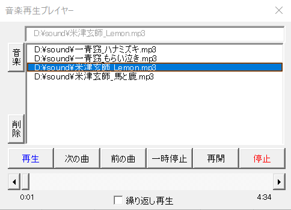

VBAで音楽再生するクラスを作成
VBAにも音楽を！
ということでVBAで音楽再生をしてみることにしました。
mciSendString
このAPIで音楽再生します。
エラーメッセージの取得では、mciGetErrorStringも使っています。
APIの解説
mciSendString
ByVal lpstrCommand As String, _
ByVal lpstrReturnString As String, _
ByVal uReturnLength As Long, _
ByVal hwndCallback As Long) As Long
今回使ったコマンドは、
open
play
seek
pause
resume
stop
close
status
statusの場合にこのバッファに情報が格納されます。
この情報を必要としない場合は、NULL（""で良い） を指定します。
使っていません。
エラーコードに対応する、エラーの内容を取得するには、この戻り値をmciGetErrorString関数に渡します。
mciGetErrorString
ByVal dwError As Long, _
ByVal lpstrBuffer As String, _
ByVal uLength As Long) As Long
エラーを説明するNULLで終わる文字列が格納される。
最大で128文字なので、実際には適当な大きさを確保しておく。
指定したエラーコードが不明だった場合、0が返ります。
VBAで音楽再生するクラスのVBAコード
clsSound
として使っています。
Option Explicit
Private Declare PtrSafe Function mciSendString Lib "winmm.dll" Alias "mciSendStringA" ( _
ByVal lpstrCommand As String, _
ByVal lpstrReturnString As String, _
ByVal uReturnLength As Long, _
ByVal hwndCallback As Long) As Long
Private Declare PtrSafe Function mciGetErrorString Lib "winmm" Alias "mciGetErrorStringA" ( _
ByVal dwError As Long, _
ByVal lpstrBuffer As String, _
ByVal uLength As Long) As Long
Private pHasOpen As Boolean 'オープルされているか
Private pFile As String '音楽ファイル
Private pAlias As String '音楽エイリアス
Private pErrDescription As String 'APIエラーメッセージ
Private pCommand As String 'lpstrCommand作成用
'音楽ファイル
Public Property Get SoundFile() As String
SoundFile = pFile
End Property
Public Property Let SoundFile(ByVal sFile As String)
pFile = sFile
'再生中等の場合もあるのでいったん停止させる
On Error Resume Next
Call StopSound
End Property
'エラーメッセージ
Public Property Get ErrDescription() As String
ErrDescription = pErrDescription
End Property
'Openしているか
Public Property Get HasOpen() As Boolean
HasOpen = pHasOpen
End Property
'mciSendStringのエラーメッセージ
Private Function GetMciError(ByVal aErrCode As Long, _
ByVal ErrRaise As Boolean) As String
Dim Buf As String * 256
Dim rtnCode As Long
rtnCode = mciGetErrorString(aErrCode, Buf, Len(Buf))
If rtnCode = 0 Then
pErrDescription = aErrCode & ":" & "不明なエラー"
Else
pErrDescription = aErrCode & ":" & Left(Buf, InStr(Buf, vbNullChar) - 1)
End If
If ErrRaise Then
Err.Raise Number:=vbObjectError + 513, Description:=pErrDescription
End If
End Function
'オープン：音楽ファイルのチェック兼用
Public Function OpenSound(Optional ByVal ErrRaise As Boolean = True) As Boolean
OpenSound = True
'現在の状態確認
Dim rtnStatus As String
rtnStatus = GetStatus
Select Case rtnStatus
Case "not ready"
Exit Function '発生条件は不明
Case "playing", "paused", "stopped"
Exit Function
End Select
'オープン
pAlias = "MySound" 'エイリアス作成
Dim ret As Long
pCommand = "open """ & SoundFile & """ alias " & pAlias
ret = mciSendString(pCommand, "", 0, 0)
pHasOpen = True
If ret = 0 Then Exit Function
'エラー
Call GetMciError(ret, ErrRaise)
OpenSound = False
pHasOpen = False
End Function
'再生：引数は秒数指定
Public Sub Play(Optional ByVal aPosition As Long = 0)
If Not pHasOpen Then Exit Sub
If Not Me.OpenSound(False) Then Exit Sub
If aPosition = 0 Then
pCommand = "play " & pAlias
Call mciSendString(pCommand, "", 0, 0)
Else
'指定位置から再生
Call PlayPosition(aPosition)
End If
End Sub
'指定位置再生：引数は秒数指定
Public Sub PlayPosition(ByVal aPosition As Long)
If Not pHasOpen Then Exit Sub
pCommand = "seek " & pAlias & " to " & aPosition * 1000
Call mciSendString(pCommand, "", 0, 0)
pCommand = "play " & pAlias
Call mciSendString(pCommand, "", 0, 0)
End Sub
'指定秒数スキップ
Public Sub SkipPosition(ByVal aPostion As Long)
If Not pHasOpen Then Exit Sub
Dim curPos As Long
curPos = GetPosition() * 200
curPos = curPos + (aPostion * 200)
pCommand = "seek " & pAlias & " to " & curPos
Call mciSendString(pCommand, "", 0, 0)
pCommand = "play " & pAlias
Call mciSendString(pCommand, "", 0, 0)
End Sub
'一時停止
Public Sub Pause()
If Not pHasOpen Then Exit Sub
pCommand = "pause " & pAlias
Call mciSendString(pCommand, "", 0, 0)
End Sub
'再生再開
Public Sub PlayResume()
If Not pHasOpen Then Exit Sub
pCommand = "resume " & pAlias
Call mciSendString(pCommand, "", 0, 0)
End Sub
'停止
Public Sub StopSound()
pCommand = "stop " & pAlias
Call mciSendString(pCommand, "", 0, 0)
Call CloseSound
End Sub
'クローズ
Public Sub CloseSound()
pCommand = "close " & pAlias
Call mciSendString(pCommand, "", 0, 0)
End Sub
'ステータス取得
'戻り値："not ready","paused","playing","stopped"
' ：未Open時は""空文字
Public Function GetStatus() As String
If Not pHasOpen Then Exit Function
Dim Mode As String
Dim Buf As String * 20
pCommand = "status " & pAlias & " mode"
Call mciSendString(pCommand, Buf, Len(Buf), 0)
GetStatus = Replace(Buf, Chr(0), "")
End Function
'再生位置取得：戻り値は秒数
Public Function GetPosition() As Double
On Error Resume Next
If Not pHasOpen Then Exit Function
Dim Buf As String * 20
pCommand = "status " & pAlias & " position"
Call mciSendString(pCommand, Buf, Len(Buf), 0)
GetPosition = CLng(Buf) / 1000
End Function
'再生時間取得：戻り値は秒数
Public Function GetLength(Optional ByVal ErrRaise As Boolean = False) As Double
Dim ret As String
ret = GetStatus '現在の状態を退避
Call OpenSound(ErrRaise)
If Not pHasOpen Then Exit Function
Dim Buf As String * 20
pCommand = "status " & pAlias & " length"
Call mciSendString(pCommand, Buf, Len(Buf), 0)
'元々OpenしていなかったらClose
If ret = "" Then Call CloseSound
GetLength = CLng(Buf) / 1000
End Function
'クラス終了処理
Private Sub Class_Terminate()
'あくまで念の為
On Error Resume Next
Call StopSound
End Sub
ほとんどはそのままAPIをCallしているだけです。
Openする部分については、少し込み入ったことをしていますが、
これは、このクラスを使用するときにOpenしているかをなるべく気にしなくて良いように考慮したものになります。
他でもなくはないのでしょうが、実質Openが通れば大体大丈夫そうです。
Err.Raiseも使い方によりますが、再生されなければVBAを止めなければならない事ってあまり無さそうなので、少し曖昧な感じにしてあります。
音楽ファイルの妥当性については、以下での使用例のように、OpenSoundでチェックするくらいで大丈夫ではないかと思います。
Open、Close、Stop等はプロシージャー名として使えないので、後ろにSoundを付けてみました。
VBAで音楽再生するクラスの使用例
VBAクラスの機能テスト評価用
Sub sample1()
Dim clsSound As clsSound
Set clsSound = New clsSound
clsSound.SoundFile = "C:\Users\yamao\Desktop\米津玄師__MV「Lemon」.mp3"
'音楽ファイルの確認
If Not clsSound.OpenSound(False) Then
MsgBox clsSound.ErrDescription
Set clsSound = Nothing
Exit Sub
End If
'再生時間取得
MsgBox clsSound.GetLength
'2秒の位置から再生
Call clsSound.Play(2)
MsgBox clsSound.GetStatus
'一時停止
Call clsSound.Pause
MsgBox clsSound.GetStatus
'再生再開
Call clsSound.PlayResume
MsgBox clsSound.GetStatus
'60秒スキップ
Call clsSound.SkipPosition(60)
MsgBox clsSound.GetPosition
'180秒の位置から再生
Call clsSound.PlayPosition(120)
MsgBox clsSound.GetPosition
'停止
Call clsSound.StopSound
Set clsSound = Nothing
End Sub
単純にクラスの各機能を呼び出しています。
クラス作成時のテストで使ったものになります。
処理時間のかかるマクロの実行中に音楽を再生する
Option Explicit
Sub sample2()
Dim clsSound As clsSound
Set clsSound = New clsSound
'音楽再生
clsSound.SoundFile = "音楽ファイルをフルパスで指定"
clsSound.Play
'いろいろと時間のかかる処理
Application.Wait Now() + TimeSerial(0, 0, 5)
'音楽停止
clsSound.StopSound
'Windowsにある音
clsSound.SoundFile = "C:\Windows\Media\Windows Notify Email.wav"
Dim playTime As Double
playTime = clsSound.GetLength '再生時間取得
clsSound.Play
Application.Wait Now() + TimeSerial(0, 0, playTime)
clsSound.StopSound
Set clsSound = Nothing
End Sub
音楽の再生は、マクロVBAとは非同期（つまりVBAは先に進む）で再生されます。
マクロ開始時に再生し、マクロ終了時に停止できます。
音楽プレーヤーを作成

※これはGIFで音は出していません。動作イメージだけです。
VBAで音楽再生するクラスの最後に
したがって、使用する場合はご自身でいろいろ試しながら改造してお使いください。
同じテーマ「VBAクラス入門」の記事
VBAクラスの作り方：列名のプロパティを自動作成する
VBAクラスの作り方：独自Rangeっぽいものを作ってみた
クラスとイベントとマルチプロセス並列処理
クラスとCallByNameとポリモーフィズム(多態性)
オートフィルターを退避回復するVBAクラス
オートフィルター退避回復クラスを複数シート対応させるVBAクラス
コレクション（Collection）の並べ替え（Sort）に対応するクラス
VBAクラスのAttributeについて（既定メンバーとFor Each）
VBAクラスを使ったイベント作成（Event,RaiseEvent,WithEvents）
VBAで音楽再生するクラスを作成
図形を方程式で動かすVBAクラス
新着記事NEW ・・・新着記事一覧を見る
VBA100本ノック 100本目：WEBから100本ノックのリストを取得｜VBA練習問題（3月3日）
VBA100本ノック 99本目：自動席替え（行列と前後左右が全て違うように）｜VBA練習問題（3月2日）
VBA100本ノック 98本目：席替えルールが守られているか確認｜VBA練習問題（3月1日）
VBA100本ノック 97本目：Accessデータを取得（グループ集計）｜VBA練習問題（2月27日）
VBA100本ノック 96本目：Accessデータを取得（マスタ結合&抽出）｜VBA練習問題（2月26日）
VBA100本ノック 95本目：図形のテキストを検索するフォーム作成｜VBA練習問題（2月24日）
VBA100本ノック 94本目：表範囲からHTMLのtableタグを作成｜VBA練習問題（2月23日）
VBA100本ノック 93本目：複数ブックを連結して再分割｜VBA練習問題（2月22日）
VBA100本ノック 92本目：セルの色を16進で返す関数｜VBA練習問題（2月20日）
VBA100本ノック 91本目：時間計算（残業時間の月間合計）｜VBA練習問題（2月19日）
アクセスランキング ・・・ ランキング一覧を見る
1.最終行の取得（End,Rows.Count）｜VBA入門
2.RangeとCellsの使い方｜VBA入門
3.変数宣言のDimとデータ型｜VBA入門
4.マクロって何？VBAって何？｜VBA入門
5.Range以外の指定方法（Cells,Rows,Columns）｜VBA入門
6.セルのコピー&値の貼り付け（PasteSpecial）｜VBA入門
7.繰り返し処理（For Next)｜VBA入門
8.セルに文字を入れるとは（Range,Value）｜VBA入門
9.マクロはどこに書くの（VBEの起動）｜VBA入門
10.とにかく書いてみよう（Sub,End Sub）｜VBA入門
このサイトがお役に立ちましたら「シェア」「Bookmark」をお願いいたします。
記述には細心の注意をしたつもりですが、
間違いやご指摘がありましたら、「お問い合わせ」からお知らせいただけると幸いです。
掲載のVBAコードは動作を保証するものではなく、あくまでVBA学習のサンプルとして掲載しています。
掲載のVBAコードは自己責任でご使用ください。万一データ破損等の損害が発生しても責任は負いません。